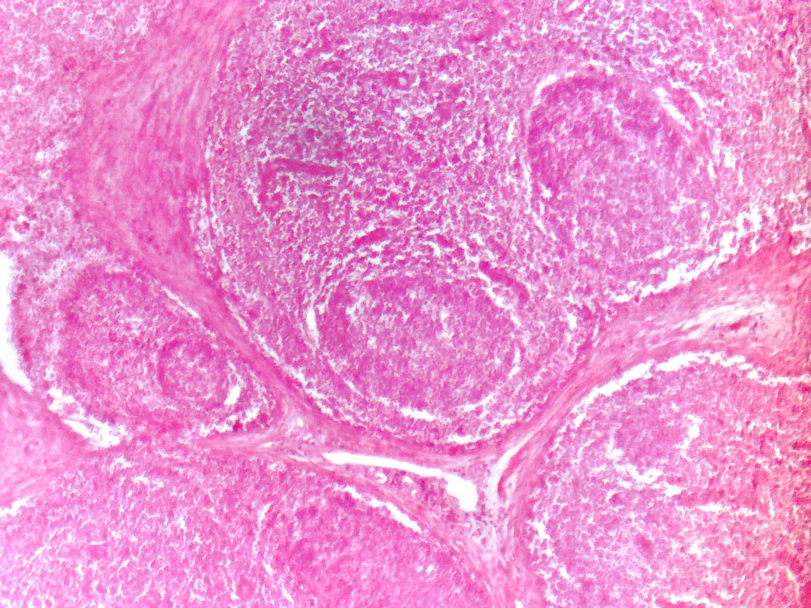
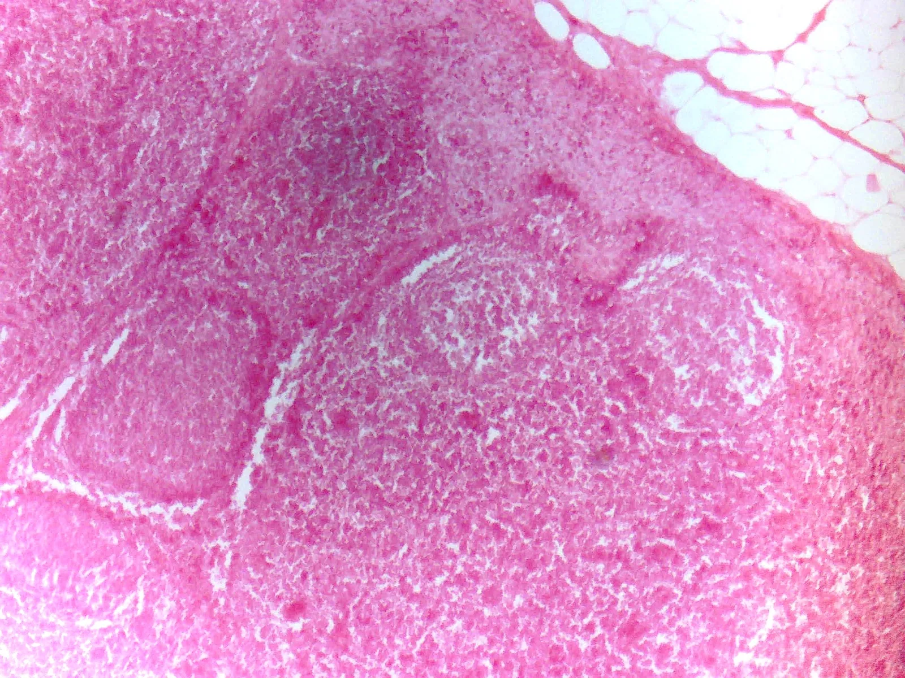
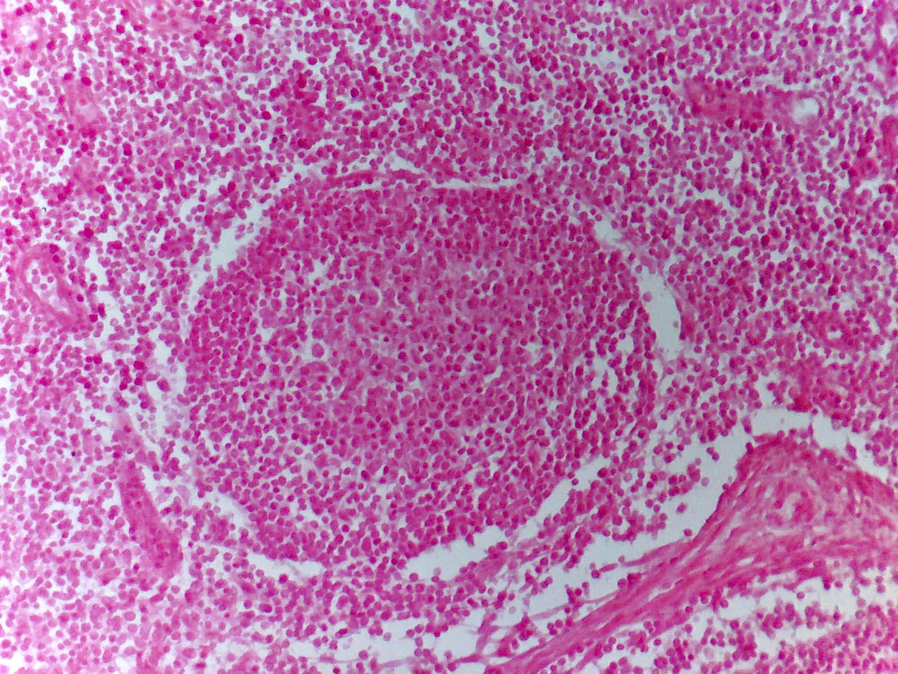
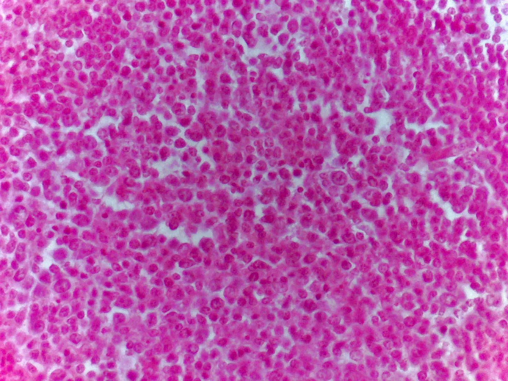

Lâmina 35 · A classificar
Lâmina 35




Toque na imagem para ampliar. No computador, use as setas do teclado para trocar de imagem.
Lâmina 35 · A classificar




Toque na imagem para ampliar. No computador, use as setas do teclado para trocar de imagem.